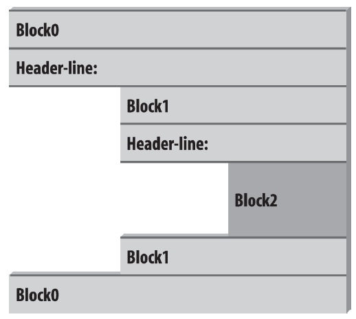
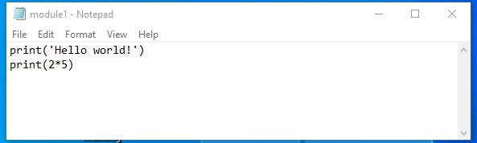
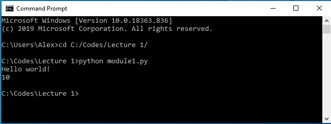
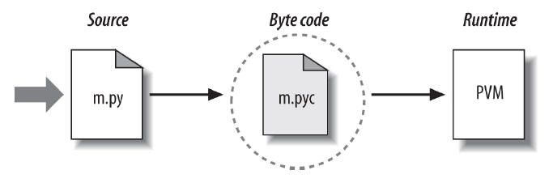
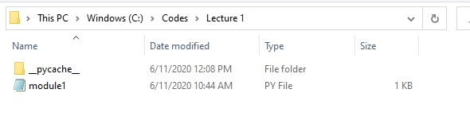
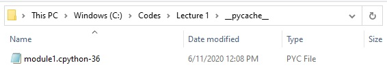

x = 105
if x > 100:
print(x, 'is high')105 is high

Python code can be decomposed into packages, modules, statements, and expressions, as follows:
Expressions are part of statements that return a value, such as variables, operators, or function calls.
For example, expressions in Python include 2+5, or x+3, or x * y for given x and y, or func1(3) for a given function func1, since they all return a value. Expressions perform operations upon objects, and produce a value that can be used in other operations, can be assigned to a variable, printed out, etc. An expression can be part of larger expressions of statements. For instance, in the statement a = 2 + 5, the part 2 + 5 is an expression.
Statements are sections of code that perform an action. The main groups of Python statements are: assignment statements, print statements, conditional statements (
if,break,continue,try), and looping statements (for,while).
Therefore, a = 2 + 5 is a statement, because it doesn’t return a value, but it performs an action by assigning the value of 2 + 5 to the variable a. Beside assignment statements (such as a = 2 + 5), other forms of statements include conditional statements (e.g., if x > 5:), looping statements (e.g., for i in range(10):), print statements (e.g., print('hi')), as well as there are several other statements, such as import, return, pass, etc. Note again that none of these statements returns a value in the way expressions do.
Modules are Python files that contain Python statements, and are also called scripts.
Thus, a module is a single Python script that is composed of a series of related statements grouped into one file. The statements in a module can assign values to variables, create functions or classes, or perform other actions.
Packages are Python programs that collect related modules together within a single directory hierarchy.
In other words, a package is a directory that contains a collection of module files. Packages can also contain sub-packages, forming a hierarchy of packages. A Python program can be organized into a single package, or more complex programs can use multiple packages to achieve its functionality.
In this lecture, we will study several types of Python statements. In a subsequent lecture, we will provide explanations about modules and packages in Python.
In Python, the if statement allows to instruct the program to perform alternative actions, based on one or several tests. This provides a means for introducing logic in our codes, and it can be interpreted as “if this case happens, then perform this action”.
The if statement takes the form of an if test, which can be followed by one or more optional elif (else if) tests, and a final optional else test. Each of the tests has an associated block of nested statements, indented under a header line.
The if statement is a compound statement, since it may contain other statements (e.g., elif or else) in its syntax.
Compound statements in Python contain other statements, and they affect or control the execution of those other statements in some way. Compound statements typically span multiple lines.
Also, the if statement is referred to as a conditional statement, since it involves actions that are performed only when the conditions in the if test are satisfied.
In its simplest form, the if statement has the following syntax:
if test1:
code to execute when test1 is TrueThe if statement is used to perform a test and control whether or not the indented block of code is executed.
if keyword, followed by a test condition, and ends with a colon : (omitting the colon at the end of if statement is one of the most common mistakes by beginner programmers in Python). The output of the expression in the if test is a Boolean variable (i.e., True or False).print statements in the next cell) that are executed if the test is True.x = 105
if x > 100:
print(x, 'is high')105 is highx = 105
# The print statement is not executed since x<50 is False
if x < 50:
print(x, 'is high')y = 20
if y < 50:
print (y, 'is low')20 is lowif True:
print('It is true!')It is true!# The print statement is not executed
if False:
print('It is true!')Therefore, the code indented under an if line will be executed only if the first line returns a Boolean True value. As we mentioned earlier, any nonzero number or nonempty array returns a Boolean True, and 0 or an empty array returns a False.
if 1:
print('It is true!')
if 5:
print('It is also true!')
# The print statement is not executed
if 0:
print('It is not true!')It is true!
It is also true!The else test allows to add additional logic to the if test.
Check the example in the following cell. Since we assigned a Boolean False to the variable x, the line if x: returns False, and as a result the statement indented under if will not be executed. In the case when the if test is False, the code after else is executed.
x = False
if x:
print('This is printed when x is True!')
else:
print('This is printed when x is False')This is printed when x is FalseHere are more examples of using else to execute a block of code when an if test is not true.
num = 43
if num > 100:
print(num, 'is high')
else:
print(num, 'is low')43 is lownum = 134
if num > 100:
print(num, 'is high')
else:
print(num, 'is low')134 is highIn the next example we use the input() function to enter text using the keyboard (press the Enter key to confirm it).
person = input("Enter your name: ")
# E.g., enter other name than Joe
if person == 'Joe':
print('Welcome Joe!')
else:
print("Welcome, Joe will be with you shortly?")Enter your name: JimWelcome, Joe will be with you shortly?Note that:
else is always attached to if, and it cannot be used as a standalone test.else allows to specify an alternative action to execute when the if test is False.We can use elif to specify additional tests, when we want to provide several alternative cases, each with its own test. The statement elif is short for “else if” and it is always associated with an if statement. If there is an else test in the code, elif must come before else.
The general syntax is:
if test1:
code to execute -> perform action 1
elif test2:
code to execute -> perform action 2
else:
code to execute -> perform action 3
The above compound statement can be interpreted as: if the case in test 1 happens, perform action 1. Else, if the case in test 2 happens, perform action 2. Or else, if none of the above cases happen, perform action 3.
That is, Python executes the statements nested under the elif test if the statements before the test are not True, and the statements under the else test are executed only when none of the elif tests is True.
Both the elif and else parts are optional and they may be omitted. As well as, there may be more than one elif statement nested in the if test.
The words if, elif, and else line up vertically, and need to have the same indentation. The block of code under each test needs to be aligned if it consists of multiple lines of code, however the code under if does not have to have the same indentation as the code under elif or else (although it is recommended to use consistent indentation).
z = 68
if z > 100:
print(z, 'is high')
elif z > 50:
print(z, 'is medium')
else:
print(z, 'is low')68 is mediumz = 30
if z > 100:
print(z, 'is high')
elif z > 50:
print(z, 'is medium')
else:
print(z, 'is low')30 is lowlocation = 'Bank'
if location == 'Auto Shop':
print('Welcome to the Auto Shop!')
elif location == 'Bank':
print('Welcome to the bank!')
else:
print('Where are you?')Welcome to the bank!We can create complex conditional statements with Boolean operators like and and or, or use comparators like <, >, or other comparators.
age = 40
if age > 65 or age < 16:
print(age, 'is outside the labor force')
else:
print(age, 'is in the labor force')40 is in the labor forceWe saw in the examples above that we can use double equal signs == to check if two objects are the same. Similarly, we can use an exclamation point and equal sign != to check if two objects are not the same.
person = 'Jim'
if person != 'Joe':
print("Welcome, what's your name?")
else:
print('Welcome Joe!')Welcome, what's your name?Python also has an if - else ternary expression with the following syntax:
action_a if condition else action_bIn the above expression, first the condition is evaluated, and afterward either action_a or action_b is executed based on the Boolean value of the condition.
Let’s reconsider the if-else statement example that we saw earlier.
num = 43
if num > 100:
print(num, 'is high')
else:
print(num, 'is low')43 is lowThe corresponding if-else ternary expression is as follows.
print(num, 'is high') if num > 100 else print(num, 'is low')43 is lowThe ternary expression allows to reduce the above 4 lines of code into 1 line. Based on the value of the condition num > 100, if the condition is True then print(num, 'is high') is executed, and if the condition is False then print(num, 'is low') is executed.
If you used languages like C, Pascal, or MATLAB, and if you are interested to know if there is a switch or case statement in Python that selects an action based on a variable’s value, there isn’t. Instead, in Python we can code multiway branching as a series of if-elif tests.
An example is shown below. Note again that we can use as many elif statements as we want, but there can be only one else statement.
choice = 'ham'
if choice == 'spam':
print(2.25)
elif choice == 'ham':
print(1.75)
elif choice == 'eggs':
print(0.75)
elif choice == 'bacon':
print(1.10)
else:
print('Bad choice')1.75Although, it may be more convenient to create a dictionary to handle case switching instead of if-elif-else especially when there are many cases involved.
branch = {'spam': 2.25, 'ham': 1.75, 'eggs': 0.75, 'bacon': 1.10}
choice = 'eggs'
if choice in branch:
print(branch[choice])
else:
print('Bad choice')0.75Python uses indentation of statements under a header to group the statements in a nested block. In the figure below, there are 3 blocks of code, each having a header line. Note that Block 1 is nested under Block 0, and it is indented further to the right of Block 0. Then, Block 2 is nested under Block 1, and it is intended even further to the right of Block 1.

Figure source: Reference [1].The indentation in Python is used to detect block boundaries. All statements indented the same distance to the right belong to the same block of code. The block ends either when a less-indented line or the end of the file is encountered.
Indentation may consist of any number of spaces, but it must be the same for all the statements in a single block. Four spaces or one tab per indentation level are commonly used, but there is no absolute standard for the number of spaces in indentation. However, it is not recommended to mix spaces and tabs for indentation within a block, because such indentation may look different in other editors and the codes can be more difficult to edit.
Look at the example in the next cell. It contains three blocks: the first block (Block 0, if x:) is not indented at all, the second (Block 1, y = 2) is indented four spaces under Block 0, and the third (Block 2, print ('Block 2') is indented eight spaces.
x = 1
if x:
y = 2
if y:
print('Block 2')
print('Block 1')
print('Block 0')Block 2
Block 1
Block 0Several common mistakes with code indentation are shown below, which result in errors.
x = 1
if x: # Error: first line indented, this line belongs to Block 0 and it shouldn't be indented
y = 2
if y: # Error: unexpected indentation, this line should have the same indentation as 'y = 2'
print('Block 2')
print('Block 1') # Error: inconsistent indentation, this line is indented 3 spaces, and 'y = 2' is indented 4 spaces
print('Block 0')File <tokenize>:6 print('Block 1') # Error: inconsistent indentation, this line is indented 3 spaces, and 'y = 2' is indented 4 spaces ^ IndentationError: unindent does not match any outer indentation level
To indent several lines of code for one tab, select the lines and then press either the Tab key or press the keys Ctrl + ]. To unindent several lines of codes for one tab, press the keys Ctrl + [.
Python expects if statements to be written on a single line.
The code below produces an error because the if statement spans two lines.
num = 80
if num > 20 and num > 50 and
num < 200 and num < 100:
print('Medium number')Cell In[23], line 3 if num > 20 and num > 50 and ^ SyntaxError: invalid syntax
When a statement is too long to fit on a single line, there are two ways to make it span multiple lines.
The first one is to enclose the statement either in a pair of parentheses (), square brackets [], or curly braces {}. Continuation lines do not need to be indented at any level, but it is a good practice to align the lines vertically for readability.
Examples are shown below.
num = 80
if (num > 20 and num > 50 and
num < 200 and num < 100):
print('Medium number')Medium number# Note that the indentation is not required for continuation lines enclosed in a pair of parentheses, brackets, or braces
num = 80
if {num > 20 and num > 50 and
num < 200 and num < 100}:
print('Medium number')Medium numberAlso, statements can span multiple lines if they end in a backward slash \. Although, this is an older feature, and it is not generally recommended. One reason is because if there are empty spaces after the backward slash, it will result in an error.
num = 80
if num > 20 and num > 50 and \
num < 200 and \
num < 100:
print('Medium number')Medium numberThe above line continuation rules apply to any other statements and expressions.
x = 1 + 2 + 3 \
+4
x10x = (1 + 2 + 3
+4)
x10Note also that Python allows to write more than one noncompound statement (i.e., statements without nested statements) on the same line, separated by semicolons.
x = 5; print(x)5Python allows to write the body of a compound statement (like if) on the same line with the header, provided the body contains just simple (noncompound) statements (i.e., without elif or else tests).
if True: print('Something')SomethingA for loop acts as an iterator in Python. It goes through items that are in a sequence or any other iterable object. Objects that we’ve learned about that we can iterate over include strings, lists, and tuples. And even dictionaries allow to iterate over keys or values.
The general format of a for loop in Python is:
for item in object:
code to execute The variable name used for the item is completely up to the coder, so use your best judgment for choosing a name that makes sense and you will be able to understand when revisiting your code. This item can then be referenced inside your loop, for example if you wanted to use if statements to perform checks.
list1 = [1, 2, 3, 4, 5, 6, 7, 8, 9, 10]for num in list1:
print(num)1
2
3
4
5
6
7
8
9
10Add an if statement to check for even numbers.
for num in list1:
if num % 2 == 0:
print(num)2
4
6
8
10We could have also included an else statement.
for num in list1:
if num % 2 == 0:
print(num)
else:
print('Odd number')Odd number
2
Odd number
4
Odd number
6
Odd number
8
Odd number
10Another common practice with for loops is to keep some sort of running tally during multiple loops. For example, let’s create a for loop that sums up the elements in a list.
# Start sum at zero
list_sum = 0
for num in list1:
list_sum = list_sum + num
print(list_sum)55Or, we could have used the operator += to perform the addition towards the sum.
# Start sum at zero
list_sum = 0
for num in list1:
list_sum += num
print(list_sum)55We can also use for loops with strings and tuples, since they are sequences, so when we iterate through them we will be accessing each item in the sequence.
for letter in 'This is a string.':
print(letter)T
h
i
s
i
s
a
s
t
r
i
n
g
.# loop through a dictionary
d = {'k1':1, 'k2':2, 'k3':3}for item in d:
print(item)k1
k2
k3Notice how the above produces only the keys.
We can also use the dictionary built-in methods .keys(), .values(), and .items() with for loops. In Python each of these methods returns a dictionary view object. The view objects provide a view of the dictionary’s key, values, and items (pairs of keys and values). The dictionary view objects support operations like membership tests and iterations over the keys, values, and items. The type of the view objects is dict_items. If we make changes to the dictionary, the view objects will keep track of the changes.
# Create a dictionary view object
d.items()dict_items([('k1', 1), ('k2', 2), ('k3', 3)])Since the .items() method supports iteration, we can print both the keys and values.
# Dictionary unpacking
for k,v in d.items():
print(k)
print(v) k1
1
k2
2
k3
3If we want to obtain a list of keys, values, or key-value tuples, we can cast the dictionary view objects as a list.
list(d.keys())['k1', 'k2', 'k3']# Compare to
d.keys()dict_keys(['k1', 'k2', 'k3'])list(d.values())[1, 2, 3]list(d.items())[('k1', 1), ('k2', 2), ('k3', 3)]Another used function is range which allows to quickly generate a list of integers, and it is often used with for loops.
string = 'abcde'
n = len(string)
for i in range(n): # i is the index
print('Index', i, 'Letter', string[i])Index 0 Letter a
Index 1 Letter b
Index 2 Letter c
Index 3 Letter d
Index 4 Letter eIn general, range can have 3 parameters to pass: a start, a stop, and a step size. Let’s see some examples.
# To get a list when using range, we need to cast it to a list
# Parameters: start, stop, step size
list(range(0, 101, 10))[0, 10, 20, 30, 40, 50, 60, 70, 80, 90, 100]# Default step size is 1
# Notice that 11 is not included
list(range(0, 11))[0, 1, 2, 3, 4, 5, 6, 7, 8, 9, 10]# Default start is 0
list(range(6))[0, 1, 2, 3, 4, 5]The enumerate function is another useful function to use with for loops. It returns both the index and the item in each loop.
string = 'abcde'
for i,letter in enumerate(string):
print('Index', i,'Letter:', letter)Index 0 Letter: a
Index 1 Letter: b
Index 2 Letter: c
Index 3 Letter: d
Index 4 Letter: eThe while statement in Python is another way to perform iteration. A while statement will repeatedly execute a single statement or group of statements as long as the condition is true. The reason it is called a ‘loop’ is because the code statements are looped through over and over again until the condition is no longer met.
The general format of a while loop is:
while test:
code to execute -> perform action 1
else:
code to execute -> perform action 2Let’s look at a few simple while loops in action.
x = 0
while x < 5:
print('x is currently: ', x)
print('x is still less than 5, adding 1 to x')
x+=1x is currently: 0
x is still less than 5, adding 1 to x
x is currently: 1
x is still less than 5, adding 1 to x
x is currently: 2
x is still less than 5, adding 1 to x
x is currently: 3
x is still less than 5, adding 1 to x
x is currently: 4
x is still less than 5, adding 1 to xWe can also add an else statement:
x = 0
while x < 5:
print('x is currently: ',x)
print(' x is still less than 5, adding 1 to x')
x+=1
else:
print('All Done!')x is currently: 0
x is still less than 5, adding 1 to x
x is currently: 1
x is still less than 5, adding 1 to x
x is currently: 2
x is still less than 5, adding 1 to x
x is currently: 3
x is still less than 5, adding 1 to x
x is currently: 4
x is still less than 5, adding 1 to x
All Done!When working with while statements, it is important to ensure that the loop’s termination condition will eventually be met. An infinite loop occurs when the condition controlling a while loop perpetually evaluates to True, preventing the loop from ever exiting.
Here is an example.
## DO NOT RUN THIS CODE!!!!
# while True:
# print("I'm stuck in an infinite loop!")If you did run the above cell, click on the Kernel menu above to interupt the kernel and restart the kernel!
We can use break, continue, and pass statements in our loops to add additional functionality for various cases.
With the break and continue statements, the general format of the while loop looks like this:
while test:
code to execute -> perform action 1
if test:
break # Exit the 'while' loop now
continue # Skip the Skip the statements after it, and go to top of the 'while' loop
else:
code to execute -> perform action 2 # Run these statements when the 'if' test is False The break and continue statements can appear anywhere inside the loop’s body, but they are usually nested in an if statement to perform an action based on some condition.
for letter in "string":
if letter == "i":
break # exit the 'for' loop now
print(letter)
print("The end")s
t
r
The endfor letter in "string":
if letter == "i":
continue # go to the top of the 'for' loop now (skip the commands following 'continue')
print(letter)
print("The end")s
t
r
n
g
The endTwo more examples follow with an else statement.
x = 0
while x < 5:
print('x is currently: ', x)
print(' x is still less than 5, adding 1 to x')
x += 1
if x == 3:
print('Breaking because x == 3')
break # terminate the 'while' loop, go to the 'print('The end')' statement
else:
print('continuing...')
print('The end')x is currently: 0
x is still less than 5, adding 1 to x
continuing...
x is currently: 1
x is still less than 5, adding 1 to x
continuing...
x is currently: 2
x is still less than 5, adding 1 to x
Breaking because x == 3
The endx=0
while x < 5:
print('x is currently: ', x)
print(' x is still less than 5, adding 1 to x')
x += 1
if x == 3:
print('Continuing to the next step')
continue # Skip the rest of the lines, and go to the while loop
print('This line will be skipped and will not be printed')
else:
print('continuing...')
print('The end')x is currently: 0
x is still less than 5, adding 1 to x
continuing...
x is currently: 1
x is still less than 5, adding 1 to x
continuing...
x is currently: 2
x is still less than 5, adding 1 to x
Continuing to the next step
x is currently: 3
x is still less than 5, adding 1 to x
continuing...
x is currently: 4
x is still less than 5, adding 1 to x
continuing...
The endThe statement pass is generally used as a placeholder and it does not do anything. Suppose we have a loop or a function that is not implemented yet, but we want to implement it in the future. They cannot have an empty body, because this would give an error. So, we use the pass statement to construct a body that does nothing.
# Pass is just a placeholder for functionality to be added later
sequence = {'p', 'a', 's', 's'}
for val in sequence:
pass# Pass can be used as a placeholder for a function or a class
def my_function(arguments):
pass
class Example:
passPython uses file objects to interact with external files on your computer. These file objects can be any sort of file you have on your computer, such as a text file, Excel document, email, audio file, picture, etc.
Python has a built-in open() function that allows us to open and write to files.
The open() function requires to pass two arguments: filename and processing mode. The filename is simply the name of the file, and for reading it, it is assumed that the file exists in the current working directory: if that is not the case, the filename should also include the path to the file. The processing mode can be either the string 'r' to read the file, 'w' to write to the file (create a file and open it for writing), or 'a' to append text to an existing file. Also, adding + to the mode allows to both read and write to a file (e.g., 'r+', 'a+'). Both the filename and processing mode should be strings.
afile = open(filename, mode)The open function creates a Python file object named afile in this example (we can select any valid name for it), which serves as a link to the file residing on the computer named filename. The file object allows to transfer strings of data to and from the linked file filename.
For example, let’s create a simple text file called test.txt having two lines of text. The open function in the example below will return a file object named myfile, which has a write() method for data transfer.
The file test.txt will be saved in the current working directory.
# Create an empty file
myfile = open('test.txt','w')The .write(string) method of the file object named myfile allows to write a string to the file. In the next example, the string 'hello text file\n' is written. Note also that we need to include the end-of-line terminator \n in the string, otherwise the next write command will continue the current line.
# Write a line of text: string
myfile.write('hello text file\n')
# Note that the write call returns the number of characters in the string16myfile.write('goodbye text file\n')18myfile.close()Now, click on the test.txt file in the Jupyter Lab dashboard, to inspect if it looks as we expect.
Use caution when opening an existing file for writing with w, as it truncates the original file, meaning that any existing content in the original file is deleted. Let’s try the following code.
myfile = open('test.txt','w')
myfile.write('This is a first line\n')
myfile.write('This is a second line\n')
myfile.close()Now open the file test.txt and you will notice that it has been overwritten.
Let’s open the file test.txt.
# Open for text input: 'r' is default mode and it can be omitted
myfile = open('test.txt','r')# Read the lines one at a time
myfile.readline()'This is a first line\n'# Read the lines one at a time
myfile.readline()'This is a second line\n'# Empty string: end-of-file (EOF)
myfile.readline() ''In addition, using the read method we can read the entire file into a string all at once.
myfile = open('test.txt')
myfile.read()'This is a first line\nThis is a second line\n'Or, if we use print the content will be displayed in a readable format without showing the \ncharacters.
myfile = open('test.txt')
print(myfile.read())This is a first line
This is a second line
Also note that we can write the above cell into one single line:
print(open('test.txt').read())This is a first line
This is a second line
One confusing thing about reading files is that if we try to read the same file object twice, we’ll find out that it only gets read once.
myfile = open('test.txt')
myfile.read()'This is a first line\nThis is a second line\n'# What happens if we try to read the file again?
myfile.read()''This happens because file objects remember their position, and after we read the file the first time, the reading ‘cursor’ was at the end of the file, and there was nothing left to read.
We can reset the ‘cursor’ like this:
# Seek to the start of file (index 0)
myfile.seek(0)0# Now read again
myfile.read()'This is a first line\nThis is a second line\n'When we have finished using the file, it is always good practice to close it.
myfile.close()You can also sometimes see another code variant, where open is used within a with statement, like in the example shown below. An advantage of this approach is that the with statement automatically closes the file after the block, as well as it makes handling any unexpected errors easier. Thus, it is the preferred way for opening files by many Python users. The with statement in Python is also referred to as a context statement, or context manager, as it allow to manage resources efficiently and cleanly.
with open('test.txt', 'r') as myfile:
data = myfile.read()
print(data)This is a first line
This is a second line
Alternatively, to read files from other directories on your computer (instead of the current working directory), enter the entire file path.
For Windows, one option is to use double backslashes \\, so that Python doesn’t treat the second \ as part of an escape character (such as \n, \t, etc.):
myfile = open('C:\\Users\\YourUserName\\Desktop\\MyFolder\\test.txt')For example, note that the \n escape character in the following cell introduces an unwanted new line.
print('C:\some\name')C:\some
ameThis is corrected by using double backslashes.
print('C:\\some\\name')C:\some\nameFor Mac OS and Linux, use forward slashes.
myfile = open('/Users/YourUserName/MyFolder/test.txt') In latest Python versions open works with either forward slashes or backward slashes, so either is fine. However, the problem with the single and double slashes in the examples above is that codes written on a Windows machine will not work on Unix machines, and vice versa. Therefore, a preferred option for Windows would be to use a raw string and single backslashes as shown below.
myfile = open(r'C:\Users\YourUserName\Desktop\MyFolder\test.txt')The raw string form (use of r before the string) turns off escape characters in strings.
Note that C:\Users\YourUserName\Desktop\MyFolder\test.txt is an absolute path because it lists all directories on the disk C: to access the file test.txt. The path can also be a relative path, where for example if we are currently in a current working directory C:\Users\YourUserName\Desktop we can use MyFolder\test.txt as a path for the filename relative to the current working directory.
Passing the argument 'a' as a processing mode opens the file and puts the pointer at the end for appending. Similarly, 'a+' allows us to both read and write to a file. If the file does not exist, one will be created.
myfile = open('test.txt','a+')
myfile.write('\nThis is text being appended to test.txt\n')
myfile.write('And another line here\n')22myfile.seek(0)
print(myfile.read())This is a first line
This is a second line
This is text being appended to test.txt
And another line here
myfile.close()When reading a file line by line, the entire file is held in the memory. Using file iterators, such as a for loop, is often preferred with large files. The created file object by open will automatically read and return one line on each loop iteration.
for line in open('test.txt'):
print(line)This is a first line
This is a second line
This is text being appended to test.txt
And another line here
In the above sections, we used the open() function in text mode, which allows to read and write strings from and to files. The open() function can also be used in binary mode that allows to read and write binary files. This mode is useful for working with non-textual files in Python, such as images, audio files, compressed files, etc. For reading and writing binary files, the processing mode in the open() function should be set to 'rb' to read the file, and 'wb' to write to the file, where the added letter b indicates that the function is applied to processing binary files.
When reading a file in binary mode, Python will read every byte in the file as is, and return a byte string. Conversely, in text mode, Python will decode the information in the file into text characters, and return a text string.
image_file = open('images/house.png', 'rb')
image_content = image_file.read()
image_file.close()type(image_content)bytesNote however that there are other Python packages that provide advanced functionalities for working with non-textual files, in comparison to the open() function. For instance, for working with image files, the Python libraries OpenCV, Pillow, ImageIO are almost always preferred by the users.
Let’s next consider an example where multiple Python objects are written into a text file on multiple lines. The objects need to be first converted to strings, as the write method does not do any automatic to-string formatting.
# Introduce numbers, string, dictionary, and list objects
S = 'Spam'
X, Y, Z = 43, 44, 45
D = {'a': 1, 'b': 2}
L = [1, 2, 3]
# Create output text file
F = open('datafile.txt', 'w')
# The lines in the string variable S above should end with \n
F.write(S + '\n')
# Convert numbers to strings
F.write('%s,%s,%s\n' % (X, Y, Z))
# Convert to strings and separate wtih \n
F.write(str(L) + '\n' + str(D) + '\n')
F.close()Next, let’s open the file and read it.
Notice in the next two cells that the displayed output gives the raw string content, while the print operation interprets the embedded end-of-line characters to render a formatted display.
content = open('datafile.txt').read()
# String display
content"Spam\n43,44,45\n[1, 2, 3]\n{'a': 1, 'b': 2}\n"# User-friendly display
print(content) Spam
43,44,45
[1, 2, 3]
{'a': 1, 'b': 2}
To convert the strings in the text file into Python objects, we will need to use conversion tools.
For instance, rstrip() removes the end-of-line character \n.
# Open the file again, this time using the object named F
F = open('datafile.txt')
# Read the first line (see above)
line = F.readline()
line'Spam\n'# Remove end-of-line
s = line.rstrip()
s'Spam'The next line contains the string of numbers '43,44,45\n', for which split() can be used to separate the numbers.
# Next line from file
line = F.readline()
line'43,44,45\n'# Split on commas
parts = line.split(',')
parts['43', '44', '45\n']# int() converts to integer numbers
numbers = [int(P) for P in parts]
numbers[43, 44, 45]x, y, z = numbers
x, y, z(43, 44, 45)To covert the list and dictionary we will use eval() which treats a string as executable code containing a Python expression.
line = F.readline()
line'[1, 2, 3]\n'line.rstrip()'[1, 2, 3]'l = eval(line)
l[1, 2, 3]type(l)listline = F.readline()
line"{'a': 1, 'b': 2}\n"d = eval(line)
d{'a': 1, 'b': 2}type(d)dictThe above process of converting strings to Python objects is time-consuming and tedious, even for this simple example. Fortunately, there are simpler ways to write and read files in Python, which do not require the above conversion steps. Next, we will learn about the Python built-in modules pickle and JSON for storing Python objects, and in another lecture we will learn about the library pandas for reading and writing to files.
Python’s module pickle allows storing almost any Python object in a file directly, without the requirement for conversions to and from strings. To store the above list L in a file, we can pickle it directly by using the method pickle.dump().
import pickle
F = open('newdatafile.pkl', 'wb') # 'wb' used for writing to a binary file, the pickle module uses binary format for storing objects
# Pickle any object to file
pickle.dump(L, F)
F.close()Then, to read the file and get the list, we simply use pickle again (a.k.a. unpickling) via the method pickle.load().
# Load any object from file
F = open('newdatafile.pkl', 'rb') # similarly, 'rb' used for reading a binary file
list1 = pickle.load(F)
F.close()
list1[1, 2, 3]The pickle module performs a conversion of Python objects to byte stream representation. In general, the process of converting a Python object into a format that can be stored or transmitted is referred to as object serialization. The format can be a byte stream (as with the pickle module) or a string representation (as with JSON module, covered next). The reverse process, called deserialization, reconstructs the original Python object from the converted format.
JSON (stands for JavaScript Object Notation) is a newer data interchange format, which originated from JavaScript, but it is language-independent and allows using stored data across programming languages (unlike pickle which works only with Python). Because of this, JSON format is commonly used for data exchange between systems and applications, especially in web development. Also, JSON uses text format for object serialization, whereas pickle uses binary format. On the other hand, JSON does not support as broad range of Python object types as pickle.
The following example shows translating the above dictionary D into JSON format to be saved into a file, and recreating the dictionary from the JSON format when it is loaded from the file.
import json
FJ = open('json_datafile.text', 'w')
# Serialize the dictionary to a text file
json.dump(D, FJ)
FJ.close()# Deserialize the text file to a dictionary
FJ = open('json_datafile.text', 'r')
new_d = json.load(FJ)
FJ.close()
new_d{'a': 1, 'b': 2}The material in the Appendix is not required for quizzes and assignments.
The interpreter in Python is the program that executes other programs. When you run your programs in Python, the interpreter reads your programs, and carries out the instructions contained in the program. Or, we can say that the interpreter interprets your codes and enables the hardware on your computer to execute the program.
When you install Python on your computer, the Python interpreter will be part of the installation, either as an executable program, or as a set of linked libraries. Note that there are several different Python installations, and depending on the type of Python installation you have on your computer, the interpreter may be implemented as a C program, a set of Java classes, or in another programming language.
Understanding how the programs are executed in Python can be helpful for programmers. For instance, I saved the following simple file as module1.py.

When I run the file in the Command Prompt, Python executed the file, and the output of the program is Hello world! and 10.

When we run programs in Python, the programs are first compiled into byte code, and are afterward run by a Python virtual machine (PVM), as shown in the figure below.

Figure source: Reference [1].Byte code is a format into which the source code (the statements in the file) is compiled by the Python interpreter. Byte-code is platform-independent (i.e., it can be run on Windows, Linux, MacOS), and it can be run more quickly than the source code program.
The byte code is stored in a file with a .pyc extension, which stands for compiled .py file. The .pyc files are saved in a subdirectory named __pycache__ located in the same directory where the source file is saved.
For example, the directory where module1.py is saved on my computer is shown below, and the __pycache__ subdirectory was automatically created by Python.

Within the subdirectory is the byte code file named module1.cpython-36. The name indicates that the Python installation on my computer uses the CPython interpreter, and the installed Python version is 3.6. Note that the file type is PYC file, meaning a .pyc extension.

Byte code is saved for speed optimization. When I run module1.py next time, Python will skip the compilation step, and it will directly load the saved .pyc byte code file. However, if the original source code file module1.py was modified, Python will re-compile and update the byte code file. Similarly, if a different version of Python is installed, a new byte code file will be created that matches the current version of Python.
Python virtual machine (PVM) is the last part of the Python interpreter. PVM executes the byte code instructions one-by-one, i.e., it is the component that runs the programs. PVM is not a separate program, and it does not need to be installed separately: it is part of the Python installation. PVM needs a software layer to allocate physical computing resources—such as processors, memory, and storage.
Python belongs to the group of interpreted languages, or they are also called scripting languages (other languages in this group are Perl, Ruby, and JavaScript). As we explained, the Python interpreter reads the statements in source files and converts them into byte code files, which are afterwards executed by the PVM. Conversely, Java, C, and C++ belong to the group of compiled languages. In these languages, a compiler converts the statements in source files into binary machine code, which is afterwards executed by the computer hardware. Note that byte code files are different than binary machine code files. Consequently, running Python programs is slower than running C or C++ programs, because the code is interpreted as it is executed. On the other hand, writing and testing Python programs is faster and easier than writing and testing programs using compiled languages. (One last clarification: Python does compile source files, but the result is not a binary machine code, and because of that it is not considered a compiled language).
As we mentioned earlier, there are several different implementations of the Python interpreter. They include CPython, Jython, IronPython, Stackless Python, and PyPy. CPython is the standard, original implementation of Python, Jython is a Python implementation targeted for integration with the Java programming language, IronPython was designed to allow Python programs to integrate with applications coded to work with Microsoft’s .NET Framework for Windows, etc.